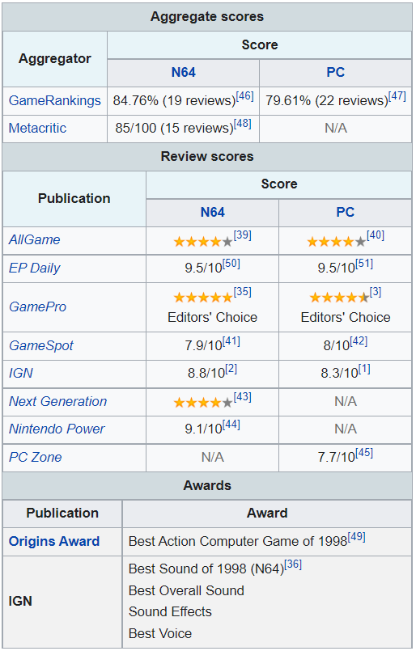

LucasArts began developing the story and gameplay in a setting that would include characters from the films participating in new, original missions using Factor 5's terrain map engine as the base. The development team's basic design plan was to combine the free-roaming style of Rescue on Fractalus with the on-rails gameplay of Atari's Star Wars arcade game. Initially, designing and refining the individualized flight controls for the game's various vehicles was difficult for programmer Mark Haigh-Hutchinson before breaking through to find the right balance for each. In May 1998, a demo of the game was displayed at E3, but the game was so incomplete at the time that Tosti considered it a tech demo. It rendered a basic heightmap and an immobile AT-AT model, while TIE fighters lacking artificial intelligence flew and fired in a predetermined path. When "playing" the demo for audiences, Tosti followed a very specific flight path of his own to give the illusion that he was actually battling with the TIEs. Despite the demo's barebones presentation, response from gamers was largely positive. In the final build of the game, many of the enemy fighters continued to follow predetermined flight paths as calculating flight paths on the fly required too much processing power.
Late in development, the team realized that they were developing the game with a Nintendo 64 memory expansion in place at all times. Unable to run the game on a standard Nintendo 64, they began working on compression techniques to allow the game to run within the confines of the standard console. At the same time, Factor 5 also appealed to Nintendo to release the newly developed memory Expansion Pak commercially. Nintendo was reluctant, expecting the technology to be reserved solely for hardware peripherals. However, after Iguana Entertainment also wanted to use the Expansion Pak to achieve a higher display resolution for Turok 2: Seeds of Evil, Factor 5 was given the green light. Ultimately, Rogue Squadron was made to run on a standard Nintendo 64 but the Expansion Pak increases its resolution from 320 × 240 to 640 × 480.
Lucasfilm was hesitant to grant access to the Star Wars library of sound effects to Factor 5 sound designer Rudolph Stember. As a compromise, the company provided Stember with sounds sampled at the relatively low rate of 22 kHz, half the standard rate. Stember objected, claiming that the clips sounded worse than effects he had lifted from VHS tapes for a previous Star Wars project. The game includes voice work from several notable persons, including screen actors Olivia Hussey and Raphael Sbarge as well as voice actors Bob Bergen, Neil Ross and Terence McGovern. Instead of using Nintendo's default sound drivers, Factor 5 developed its own tool called MOsys FX Surround. The Factor 5 drivers use Nintendo 64 processors, but tax them less; advanced compression techniques were also employed. As a result, the game includes over 80 minutes of high-quality stereo sound.
In November 1998, a month before the game's scheduled release, LucasArts announced the worldwide agreement with Nintendo concerning three new Star Wars video games. It granted Nintendo the rights to market the games and hold exclusive, worldwide distribution rights for five years following each release. Rogue Squadron was the first game released under this agreement. To promote the release of the game, Mark Hamill, the actor who played Luke Skywalker in the Star Wars films, visited the Mattel Children's Hospital in Los Angeles to play the game with patients in a Starlight Children's Foundation's Fun Center.
When Rogue Squadron was released in early December 1998, the title's Nintendo 64 incarnation was the second-highest-selling video game for the first half of the month (behind Nintendo's The Legend of Zelda: Ocarina of Time) and the holiday season. PC Data, which tracked sales in the United States, reported that Rogue Squadron sold 584,337 units and earned $29.3 million in revenue by the end of 1998. This made it the country's ninth-best-selling Nintendo 64 release of the year. Delayed until after Christmas in the United Kingdom, the game was released mid-January and debuted as the second-best-selling game of the month, ahead of Ocarina of Time. In August 1999, Nintendo added the title to its best-selling Player's Choice collection, while the PC version was re-released as a part of the LucasArts Archive Series in May 2001. The PC version was also released via digital distribution in 2015. The Nintendo 64 version sold over 1 million copies in the United States, and over 44,000 in Japan. Rogue Squadron's retail success was not anticipated by the game's producer Julian Eggebrecht, who said that the game sold "about 100 times better than anybody expected". He believed that releasing the game shortly after the theatrical re-releases of the original Star Wars films and only five months before the theatrical release of Star Wars: Episode I – The Phantom Menace helped contribute to the game's success. Two sequels were later developed and released for the GameCube—Star Wars Rogue Squadron II: Rogue Leader and Star Wars Rogue Squadron III: Rebel Strike—as well as Star Wars Episode I: Battle for Naboo, a spiritual successor released for Windows and Nintendo 64.